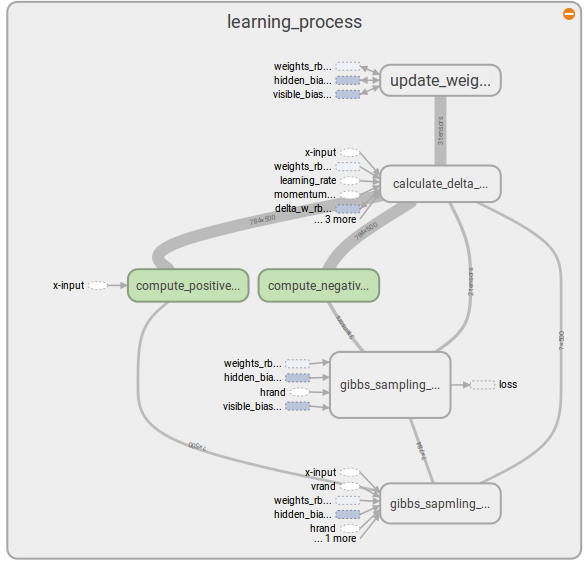
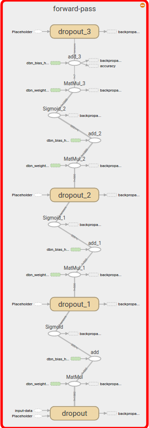

Introducing the learning mechanism¶
Basic Structure¶
The learning part of our Project contains three directories: frontend, networks and utils.
The networks are in networks. The package frontend is a wrapper for the learning process.
The utils is a package containing all helper modules. The helper functions and the structure of RBM_CDK is
taken from GitHub.
Main has five functions for training and classifying a given dataset. The Main.fit_rbm() and Main.classify_rbm()
are functions to demonstrate how the training of an RBM would look like. But we only used Main.fit_dbn() and Main.classify_dbn()
Main.fit_dbn() performs a complete pretraining with the given dataset. Then it calls DBN.supervised_finetuning().
With Main.supervised_training() we tried to see if pretraining had an effect on our training.
DBN has three public functions which hide most of the implementation from the user. But additionally they should give
the user full control over the learning process. That’s why the DBN.pretraining() and DBN.supervised_finetuning()
give the user access to all hyperparameters and the loading and saving directories. But the training process itself is hidden from
the user.
The class DBN uses the class RBM to pretrain the layers. Then it extracts them, adds an additional output
layer and trains them with a supervised finetune method.
Network: RBM¶
The restricted Boltzmann machine is a unsupervised neural network. The network consists of two layers, the visible and the hidden layer. The visible layer has the size of the input data vector. The hidden layer has the size of the number off features it should extract.
The network is learning stochastically and unsupervised with the CD-k algorithm (constrative divergence).
The visualization of this learning algorithm was already used in the Get Started with Tensorflow.
The input from the visible layer is passed up to the hidden layer and then back down to the visible layer. This process is called Gibbs sampling step. After a specified number of Gibbs sampling steps the original input and the sampled input are compared. The error between the two values is used to adapt the weights of the network.
For a more in depth description of this network see the introductionto restricted Boltmann machines or the practical guide on how to train them
Network: DBN¶
In the paper A fast learning algorithm for deep belief nets the author describes a procedure to stack multiple RBMs on top of each other. Each one is trained unsupervised and then the next network takes the output of the previsous one to train itself. This can be done multiple time and every time more features are learned. This is a way to pretrain a Deep Belief Network effectively.[HintonPretraining]_
After the pretraining supervised backpropagation can be used to train an effective discriminative model.[HintonDiscrim]_
The pretraining helps to kind of initialize the weights for the supervised training. So the networks learning progress is better. It also limits the amount of labeled training data which is needed to train the model.
The supervised training is visualized by this Tensorboard graph:
For the supervised training we only had 300 labeled data touples. That’s why after the network generates its own training data after the first two epochs.:
dbn.supervised_finetuning()
examples = input.next_batch(100 + 5 * i)
prediction = dbn.classify(examples[0])
train_set.append(examples[0], prediction)
With this technique we are trying to prevent the network from overfitting.
| [WikiBoltz] | https://en.wikipedia.org/wiki/Restricted_Boltzmann_machine |
| [WikiDBN] | https://en.wikipedia.org/wiki/Deep_belief_network |
| [HintonDiscrim] | https://www.youtube.com/watch?v=43hJRLhRidg |
| [HintonPretraining] | https://www.youtube.com/watch?v=8fHpaKm9x4w |